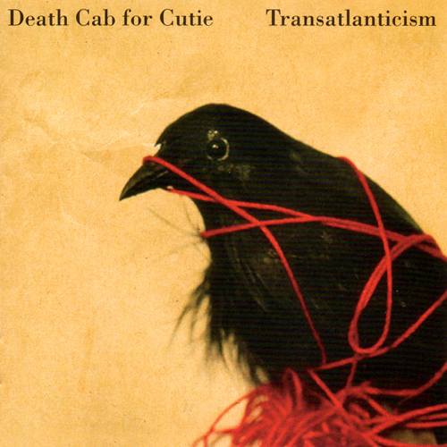
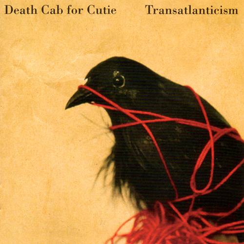
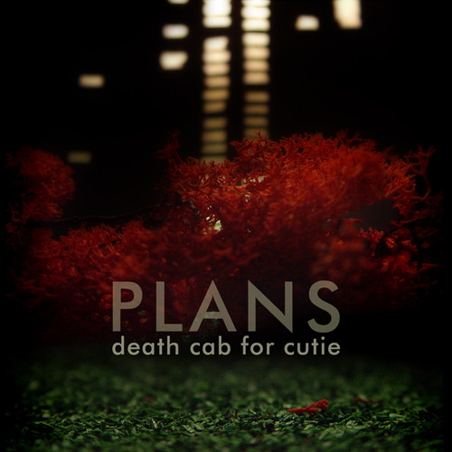
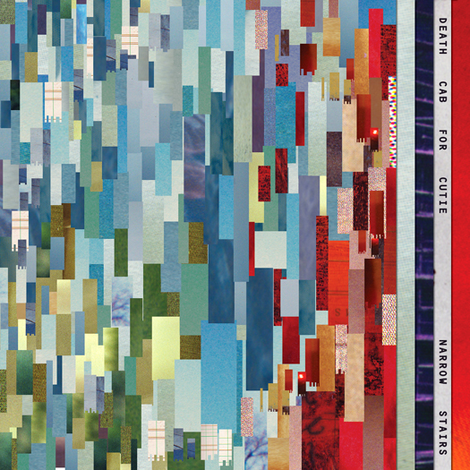
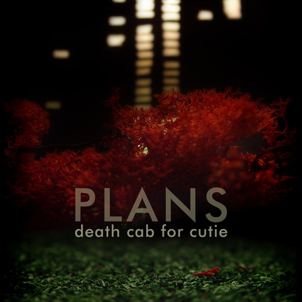
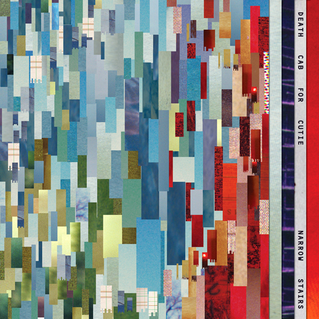

 



Death Cab for Cutie is an American alternative rock band formed in Bellingham, Washington, in 1997.[6] The band comprises Ben Gibbard (vocals, guitar, piano), Nick Harmer (bass) and Jason McGerr (drums). Death Cab for Cutie's music has been labeled as indie rock, indie pop, emo, and alternative rock, and is noted for its use of unconventional instruments as well as Gibbard's unique lyrical style. The band has released seven studio albums, five EPs, and one demo to date. The group takes its name from a song by the Bonzo Dog Doo-Dah Band featured in the Beatles' 1967 film, Magical Mystery Tour.
Gibbard's first album, You Can Play These Songs with Chords, was released as a demo, leading to a record deal with Barsuk Records.[7] It was at this time that Gibbard decided to expand the project into a complete band, and recruited band members to join. In 1998 the band released its debut album, Something About Airplanes, followed by We Have the Facts and We're Voting Yes in 2000; both records were positively received in the indie community. Lineup changes ensued both before and after the release of the The Photo Album (2001), and the group's album Transatlanticism (2003) gained the band commercial success. After signing with Atlantic Records, Death Cab For Cutie released Plans in 2005, which contained the singles "Soul Meets Body" and "Crooked Teeth". The 2008 record Narrow Stairs served as a stylistic departure for the group. The band released their seventh album, Codes and Keys, on May 31, 2011.
In 2014, founding guitarist and producer Chris Walla announced that he would be departing from the band after recording their forthcoming eighth studio album.